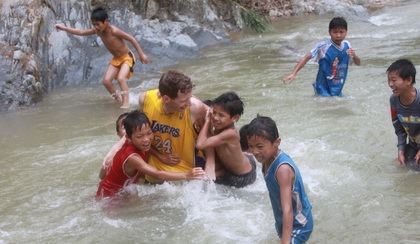

农村孩子的真实需要 -“归属”
|

"志愿者和同学们" 在广西东兰县板烈小学从事多年留守儿童教育研究的卢安克发现一个现象： 归属与权威
当农村开始大规模集中办学后，大量的农村学生被集中在越来越大的中心学校里寄宿上课，这也就造成他们之间越来越陌生，找不到一个属于自己独特的生活空间，找不到归属感。所以农村的学生就会加入帮派，会上网成瘾或退学。现在的留守儿童越来越难适应有权威的课堂。由于大部分农村孩子，从小父母就不在身边，从而造成他们不容易接受大人作为的权威。 没有了权威，也就没有了可教育和完善他们意志的手段。虽然，留守儿童在自然环境中的活动也能培养很强的行动力和自力，但没有通过服从权威而培养的意志只能是没有自控能力的乱发挥的意志。在他们进入青春期的时候，这个缺陷就很突出。 很多来西藏旅行旅行的人都会给孩子们带上糖果、铅笔、本子这些礼物。这些初衷固然是好的，但是随着游客的逐年增加，“礼物”却慢慢变了性质。 所以他们需要一个能代替权威的因素。不过，这个因素需要是一个属于他自己的，或者只属于他们班级的，否则他们也不可能在乎，不可能接受，不可能把它当成跟自己有关的权威。跟留守儿童一起做的创作可以成为这样的一种因素，可以成为他们自己的“家”，而属于自己的创作项目比家长更能成为一种能带来追求的动力。 农村的孩子寻找权威也就是因为他们在心里寻找着归属。我们在物质、心理和精神上的归属作为我们人生的引导力。在社会上没有归属的留守儿童，为了找到自己能归属的群体、集体、风格、行为或精神，他们什么都愿意放弃，什么都愿意进入，不加选择。如果我们不给他们提供可建立归属的好机会，也不跟他们一起创作可归属的文化，他们就会失去自己的人生引导或找坏的机会。 只有从自己的行为得到了感受而获得的文化才具有足够的深度，才能带来归属，才能够让学生在青春期时期保留着足够的力量。如果不是在青春期之前，我们就没有了机会，因为到了青春期，学生的心理已经封闭起来了，已经不接受我们的。在之前没有获得深度的学生会进入一种无方向、无精神的空虚感，而对物质的消费会代替本来的精神。到这个时候他们再也找不到更多的追求，再也找不到去追求与社会不同东西的力量。 所以对农村的孩子来说，真正缺少的不是钱，而是可以成为孩子心中权威的人。也就是说，农村孩子最需要的能够有一个值得信任的权威，来帮助他们建立属于自己的归属。 当大部分农村孩子因为父母外出，在成为留守儿童时谁来肩负这个权威呢？那就是长期在他们身边的乡村教师。 |